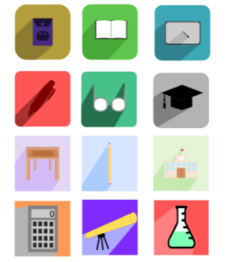

There is no doubt that the number of women in STEM-related fields has been increasing since the early 1990s. According to the National Center for Education Statistics (NCES), in 2009, just over 140,000 women graduated with STEM degrees. By 2016, that number grew to over 200,000 — nearly a 43% increase in just 7 years. Despite that, overall growth has been relatively slow, hesitant and heavily influenced by psychological factors. In K-12, the STEM disparity between males and females is relatively low. But when students make the jump to higher education, a significant gender gap emerges. So, why aren’t female high school graduates pursuing STEM degrees? Negative stereotypes surrounding girls who pursue STEM. Lack of encouragement from educators and peers. Frequently undesirable environment in the workforce. While, on the one hand, women’s participation in higher STEM education has increased remarkably, participation has not increased equally in each field. For example, in the UK and the U.S., over 50% of all biomedical degrees are presented to women. However, the numbers shrink dramatically when it comes to mathematics and physical sciences, and the fields of computing and engineering are the ones in which women are most severely underrepresented.
After inspecting all the problems women in STEM face, the future may seem bleak. Luckily, the journey towards equal representation has already begun, and every day, change happens. Across the globe, education systems are fighting against the odds to create an environment where gender does not inhibit passion. So, how do we, as educators, become a bigger part of this movement? The answer is simple: early exposure. The best way to fight for greater participation is to allow girls to explore their STEM options and interests at an early age. Roberta Rincon, a researcher at the Society of Women Engineers in Chicago, states that girls are oftentimes less confident in areas like math or science than their male counterparts. The classroom is one of the biggest environments with the potential to influence interests in STEM, and by extension, educators are the role models who can guide and support girls in this area